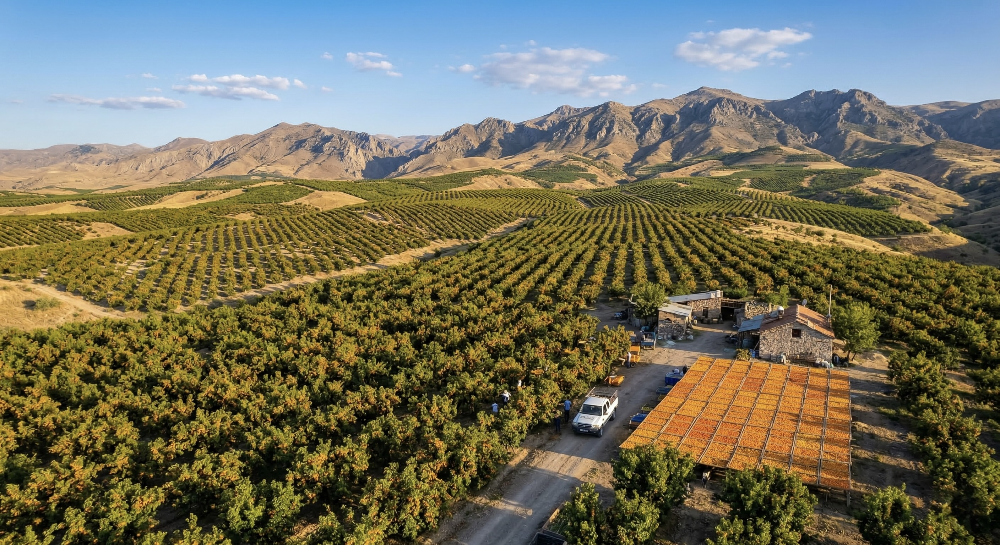
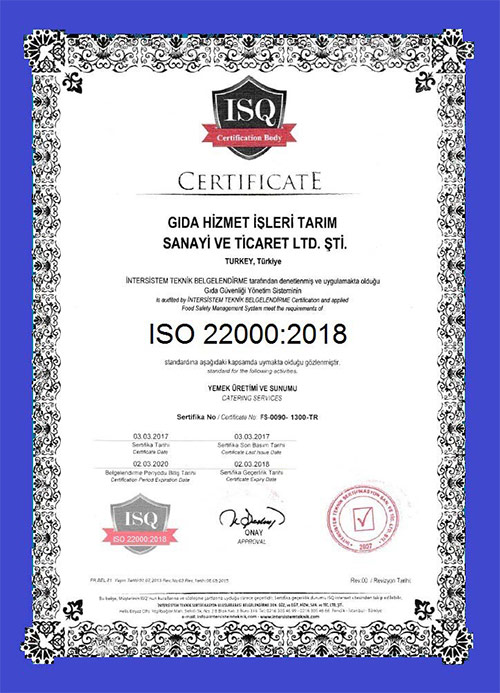
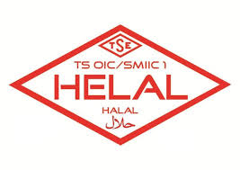
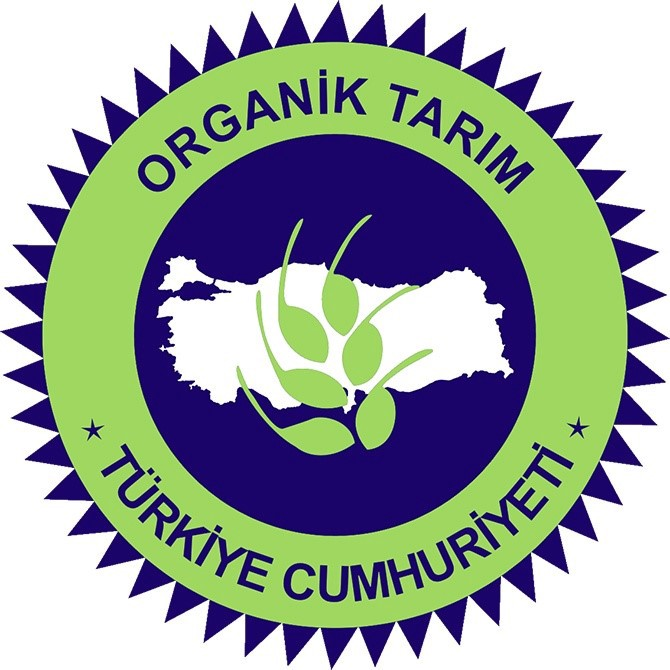
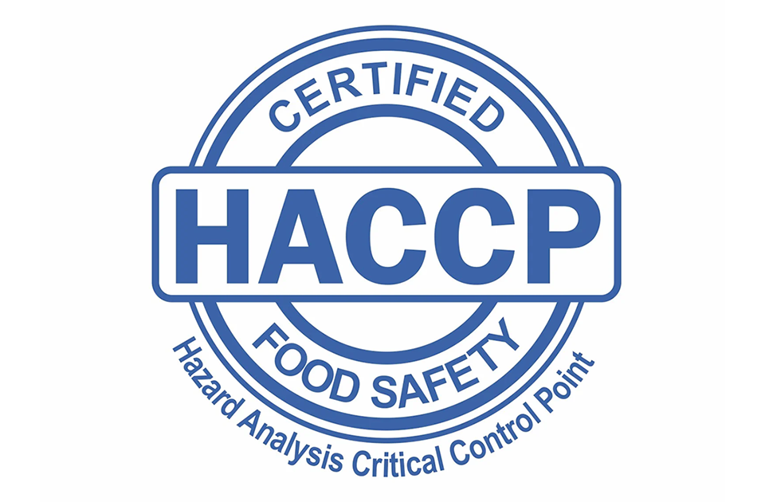

Bahçemizden Hikayeler
Doğanın Kalbinden
Doğanın Kalbinden
Sofranıza Yolculuk
← Kaydırarak Keşfedin →


Toraman's Dried Apricots olarak, 2010 yılından bu yana kuru gıda sektöründeki derin tecrübemizle Malatya'nın eşsiz lezzetlerini dünya pazarına taşıyoruz.
Bugün başta Almanya, Fransa, İngiltere ve ABD olmak üzere; İsrail'den Japonya'ya kadar uzanan geniş bir ihracat ağında, %100 müşteri memnuniyeti ilkesiyle faaliyet gösteriyoruz.
Üretimimizin neredeyse tamamını, uluslararası hijyen ve kalite standartlarından ödün vermeden dünyanın dört bir yanına ulaştırarak, yerli üretimimizi küresel ölçekte temsil etmenin gururunu yaşıyoruz.





Malatya güneşinde, hiçbir katkı maddesi kullanılmadan geleneksel yöntemlerle kurutulur.
İhracat kalitesindeki ürünlerimizi uluslararası gıda güvenliği standartlarında hazırlıyoruz.
Nesillerdir devam eden tecrübemizle, toprağımızın en bereketli meyvelerini seçiyoruz.
Doğallıktan ödün vermeden büyümek ve Malatya kayısısını en sağlıklı haliyle dünya sofralarına sunmak.
Küresel pazarda yenilikçi yaklaşımlarla lider tedarikçi olmak ve müşterilerimize premium çözümler üretmek.
Dürüstlük ve sürdürülebilirlik temelinde, tüm iş ortaklarımızla güvene dayalı bir aile bağı kurmak.
← Kaydırarak Keşfedin →